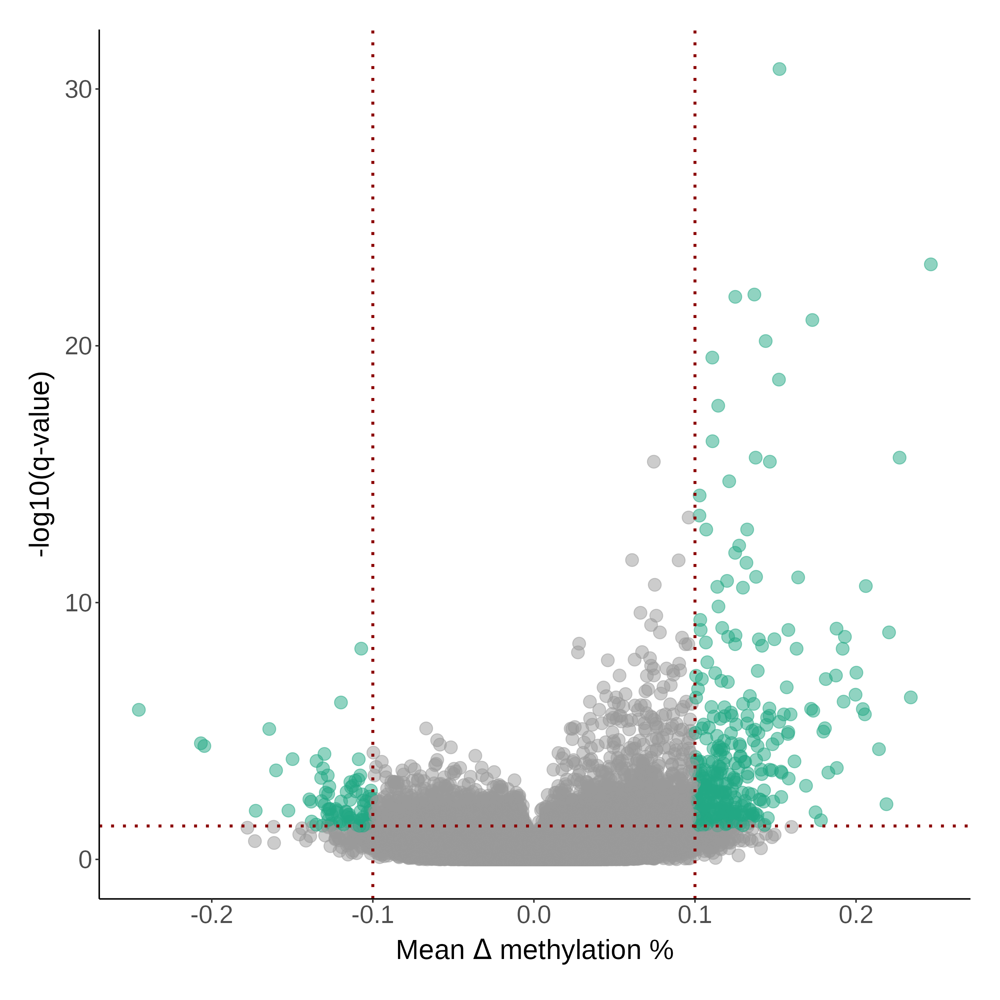
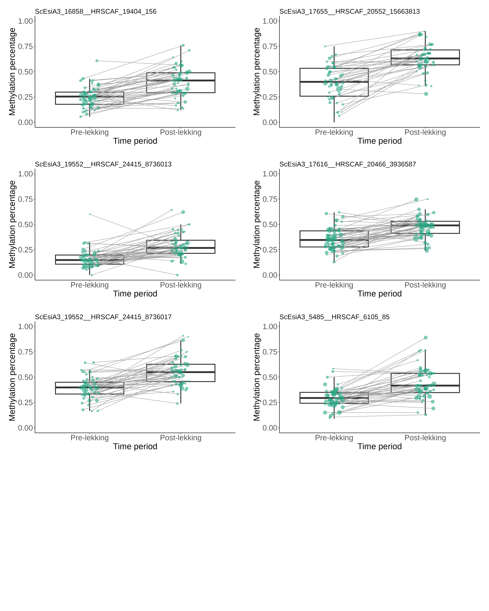

### load packages
pacman::p_load(tidyverse, data.table, tibble, performance, matrixStats,
parallel, performance, lmerTest, tidystats, insight, rptR)
### load epi data
load(file = "data/processed/methylkit_prepost_long_onlyvar_thres0.3_min_0.5_group.RData")
### load phenotype data
load("data/phenotypes/fulldata_complete_epi_withdates.RData")
prepost <- subset(all_pheno_epi, !is.na(prepost)) #phenotype dataset also consists of other individuals not part of this study
rm(all_pheno_epi)
### merge with metadata
prepost_long <- left_join(prepost_long, prepost[,c("id", "prepost", "Core", "year", "born","site", "fulldate")],
by = c("id", "year", "fulldate"))
prepost_long <- prepost_long %>% mutate(age_year = as.factor(case_when(Core == "Core" ~ year - born,
Core == "No core" ~ NA)),
age = as.factor(case_when(Core == "Core" & (year - born > 1) ~ "Adult",
Core == "Core" & (year - born == 1) ~ "Yearling",
Core == "No core" ~ "Adult")))
### convert data to a list, one per CpG site
data <- prepost_long %>% group_split(chr_pos)4 Changing CpG sites
Identifying CpG sites that change over the lekking season
Next, we want to identify CpG sites that significantly change in methylation level over the lekking season. To do so, we build a generalized linear mixed effect model per CpG site, using the time period (pre- or post-lekking) as a fixed effect. Moreover, as there are multiple samples for each individual, we correct for the non-independence of samples by including ID as a random effect. The response variables in these models are both the number of methylated and number of unmethylated C’s, using the cbind function.
4.1 Prepare the data
4.2 Function to run the model
Below you will find the full model used to 1) run the model in parallel per CpG site and 2) collect the output in a dataframe. Most importantly, this is the formula run for the model:
lme4::glmer(cbind(numC, numT) ~ prepost + (1|id), family = "binomial")Code
### define function to collect overdispersion statistics
overdisp.lmer_fun <- function(model) {
vpars <- function(m) {
nrow(m)*(nrow(m)+1)/2
}
model.df <- sum(sapply(VarCorr(model),vpars))+length(fixef(model))
rdf <- nrow(model.frame(model))-model.df
rp <- residuals(model,type="pearson")
Pearson.chisq <- sum(rp^2)
prat <- Pearson.chisq/rdf
pval <- pchisq(Pearson.chisq, df=rdf, lower.tail=FALSE)
data.frame(chisq=Pearson.chisq,ratio=prat,rdf=rdf,p=pval)
}
### build function to run the model
function_model_glmer <- function(df){tryCatch({
chr_pos <- as.character(df[1,1])
df <- as.data.frame(df)
df$prepost <- as.factor(df$prepost)
df$id <- as.factor(df$id)
# model
model <- lme4::glmer(cbind(numC, numT) ~ prepost + (1|id), family = "binomial", df)
#fixed effects
prepost_estimate <- summary(model)$coefficients[2,1]
prepost_se <- summary(model)$coefficients[2,2]
prepost_zval <- summary(model)$coefficients[2,3]
prepost_pval <- summary(model)$coefficients[2,4]
#random effects
id_sd <- attributes(VarCorr(model)$id)$stddev
id_variance <- data.frame(VarCorr(model), comp="Variance")[1,4]
rsqc <- performance::r2(model)$R2_conditional #fixed plus random effects relative to overall variance
rsqm <- performance::r2(model)$R2_marginal #fixed effects relative to overall variance
dispersion.chisq <- overdisp.lmer_fun(model)[1,1]
dispersion.ratio <- overdisp.lmer_fun(model)[1,2]
dispersion.rdf <- overdisp.lmer_fun(model)[1,3]
dispersion.pval <- overdisp.lmer_fun(model)[1,4]
isSingular <- isSingular(model)
if(is.null(summary(model)$optinfo$conv$lme4$messages )){
convergence <- NA
}
if(!is.null(summary(model)$optinfo$conv$lme4$messages )){
convergence <- summary(model)$optinfo$conv$lme4$messages
}
icc_id <- icc(model, by_group = TRUE, tolerance = 0)[1,2]
return(data.frame(chr_pos=chr_pos,
prepost_estimate = prepost_estimate,
prepost_se = prepost_se,
prepost_zval = prepost_zval,
prepost_pval = prepost_pval,
id_sd = id_sd,
id_variance = id_variance,
rsqc = rsqc,
rsqm = rsqm,
dispersion.chisq = dispersion.chisq,
dispersion.ratio = dispersion.ratio,
dispersion.rdf = dispersion.rdf,
dispersion.pval = dispersion.pval,
isSingular = isSingular,
convergence = convergence,
icc_id = icc_id
))
}, error = function(e){cat("ERROR :", conditionMessage(e), "\n");print(chr_pos)})
}4.3 Run the model
Here, we run the model in parallel, and next exclude CpG sites where there was overdispersion or convergence errors. After this filter step, we apply an FDR multiple-testing correction.
### run the model in parallel per CpG site (list item)
out_glmer <- parallel::mclapply(data, function_model_glmer, mc.cores=4)
out_glmer <- do.call(rbind.data.frame, out_glmer)
### exclude overdispersion and convergence issues
out_glmer <- subset(out_glmer, dispersion.ratio < 1.1 & dispersion.pval > 0.05 & is.na(convergence))
### apply a FDR multiple-testing correction
out_glmer$prepost_qval <- p.adjust(out_glmer$prepost_pval, method = "fdr", n = nrow(out_glmer))A “changing CpG site” is then defined as a CpG site with a significant effect of time period (FDR-corrected q-value < 0.05) and an absolute beta estimate of 0.1 (similar to needing at least a 10% methylation difference between groups).
### only select CpG sites with significant effects of pre/post
sub_glmer_prepost <- subset(out_glmer, prepost_qval < 0.05 & abs(prepost_estimate >= 0.1))A total of 3,563 CpG sites significantly change across the lekking period.
4.4 Plotting
4.4.1 Volcano plot
Next, we make a volcano plot to see the results.
load(file="results/modeloutput/prepost_modeloutput_glmer_min0.75.RData")
out_glmer <- out_glmer %>% mutate(sig = as.factor(case_when(abs(as.numeric(prepost_estimate)) > 0.1 & prepost_qval < 0.05 ~ "sig", TRUE ~ "nonsig")))
clrs <- viridisLite::viridis(6)
ggplot(out_glmer, aes(x = as.numeric(prepost_estimate), y = -log10(as.numeric(prepost_qval)))) + geom_point(size=4, alpha=0.5, aes(col = as.factor(sig))) +
labs(x = "Estimate time period", y = "-log10(q-value)") +
scale_color_manual(values=c("grey60", clrs[4])) +
geom_hline(yintercept = -log10(0.05), col = "darkred", linetype = "dotted", linewidth = 1) +
geom_vline(xintercept = -0.1, col = "darkred", linetype = "dotted", linewidth = 1) +
geom_vline(xintercept = 0.1, col = "darkred", linetype = "dotted", linewidth = 1) +
theme(legend.position="none") -> volcano_change
Interestingly, there seems to more CpG sites that decrease in methylation over time (negative beta estimates) compared to CpG sites that increase in methylation over time (positive beta estimates).
4.4.2 Raw data
To assess whether the models performed well, I also plotted the raw data of the five most significantly changing CpG sites.
# raw plot for the 1st significant CpG site, repeat for the other 4 and combine with cowplot
out_glmer <- out_glmer %>% arrange(prepost_qval)
subset(changing_cpg, chr_pos == out_glmer$chr_pos[1]) %>%
arrange(id, year) %>%
ggplot(., aes(x = prepost, y = methperc))+
geom_boxplot(linewidth=1, outlier.shape=NA) +
geom_path(aes(group = id_year), alpha = 0.8, col = "grey60", position = position_jitter(width = 0.1, seed = 3922)) +
geom_point(aes(alpha = 0.8, size=cov), col = clrs[4], position = position_jitter(width = 0.1, seed = 3922)) +
labs(x = "Time period", y = "Methylation percentage", subtitle = out_glmer$chr_pos[1]) +
theme(legend.position="none") -> plot_top_cpg_1
4.5 Note on LMM vs GLMM
I also executed a similar model to above but using a lmer where the response variable is the methylation % rather than nC, nT. Using the same filtering steps, I only found 199 significantly changing CpG sites, where 103 were also included in the glmer output.